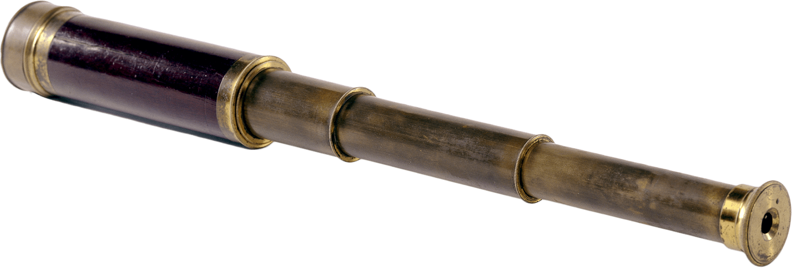

Thoreau’s Spyglass
Thoreau preferred to observe nature with the naked eye, not through a lens.
It was after much internal debate
that he decided to spend $8.00
— a rare splurge—
on this spyglass in the spring of 1854.
He was delighted
with his enhanced ability
to study bird behaviors
and other natural phenomena.
It was after much internal debate
that he decided to spend $8.00
— a rare splurge—
on this spyglass in the spring of 1854.
He was delighted
with his enhanced ability
to study bird behaviors
and other natural phenomena.
